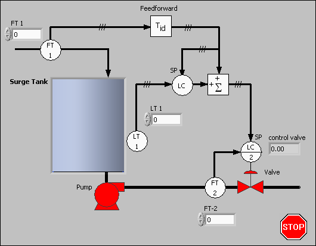
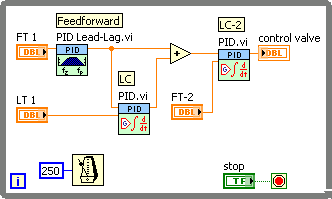
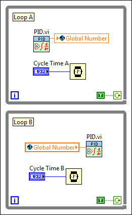

Find related examples
Find related examplesYou can design a control strategy by sketching a flowchart that includes the physical process and control elements such as valves and measurements. Also include feedback from the process and any required computations. You then can use the PID VIs, combined with the math and logic VIs and functions in LabVIEW, to translate the flowchart into a LabVIEW block diagram.
The following image shows a sample control flowchart:

The following image shows the equivalent LabVIEW block diagram:

In the previous images, FT is the flow transmitter, LT is the level transmitter, LC is the level of control, and SP is the setpoint. The only elements missing from this simplified VI are the loop-tuning parameters and the automatic-to-manual switching.
You can handle the inputs and outputs through DAQ devices, FieldPoint I/O modules, GPIB instruments, or serial I/O ports. You can adjust polling rates in real time. Potential polling rates are limited only by your hardware and by the number and graphical complexity of your VIs.
The PID VI and the PID Lead-Lag VI are time-dependent. A VI can acquire timing information either from a value you supply to the cycle time control, dt, or from a time keeper such as those built into the PID VIs. If dt is less than or equal to zero, the VI calculates new timing information each time LabVIEW calls it. At each call, the VI measures the time since the last call and uses that difference in its calculations. If you call a VI from a While Loop that uses one of the LabVIEW Timing VIs and functions, you can achieve fairly regular timing, and the internal time keeper compensates for variations. However, the resolution of the Tick Count (ms) function is limited to 1 ms.
If dt is a positive value in seconds, the VI uses that value in the calculations, regardless of the elapsed time. National Instruments recommends you use this method for fast loops, such as when you use acquisition hardware to time the controller input or real-time applications. Refer to the example VIs located in the labview\examples\control\PID directory for examples of using timing with the PID VIs.
Find related examples
 |
Note��If you installed NI-DAQmx, you also can view relevant examples in the labview\examples\DAQmx\Control\Control.llb directory. |
According to control theory, a control system must sample a physical process at a rate about 10 times faster than the fastest time constant in the physical process. For example, a time constant of 60 seconds is typical for a temperature control loop in a small system. In this case, a cycle time of about 6 seconds is sufficient. Faster cycling does not improve performance. In fact, running all your control VIs too fast can degrade the response time of your LabVIEW application.
All VIs within a loop execute once per iteration at the same cycle time. To run several control VIs at different cycle times and still share data between them, as for example in a cascade, you must separate the VIs into independently timed While Loops. The following block diagram shows a cascade with two independently timed While Loops:

A global variable passes the output of the PID VI in Loop A to the process variable input of the PID VI in Loop B. You can place both While Loops on the same block diagram or in separate VIs. Use additional global or local variables to pass any other necessary data between the two While Loops.
If the front panel of your VI does not contain graphics that LabVIEW must update frequently, the PID VIs can execute at kilohertz (kHz) rates. However, actions such as mouse activity and window scrolling interfere with these rates.